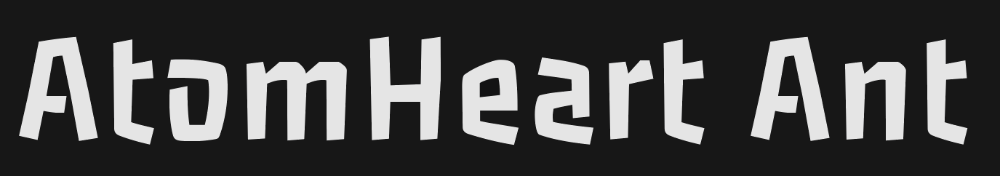

AtomHeart Ant is a closed-world obby-like game, made for Tübitak 4006b.
Control Keys
- W - Move Forward
- S - Move Backwards
- A - Move Left
- D - Move Right
- Shift - Run
- Space - Jump
- C - Dash
Trailer Video
Made By
- Dorukhan Tekin
- Yusuf Alp Demirkaya
- Hüseyin Hadi Gök
- Ali Furkan Akça
- Yağmur Doğan
Advisory Teacher
- Hüsna Esra Özdemir